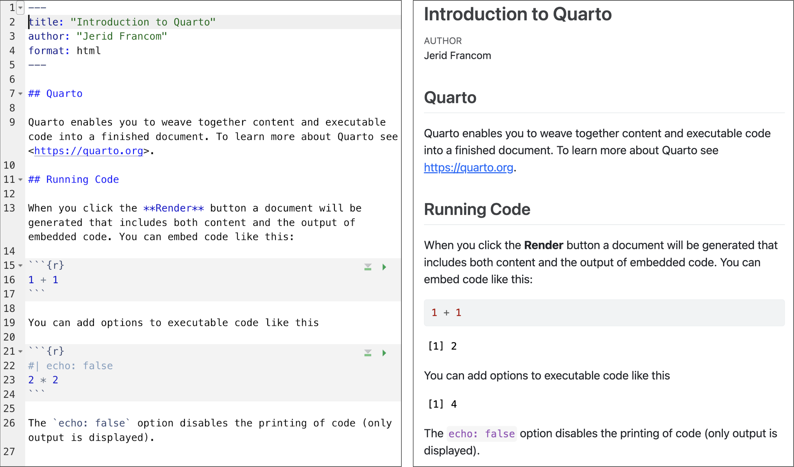
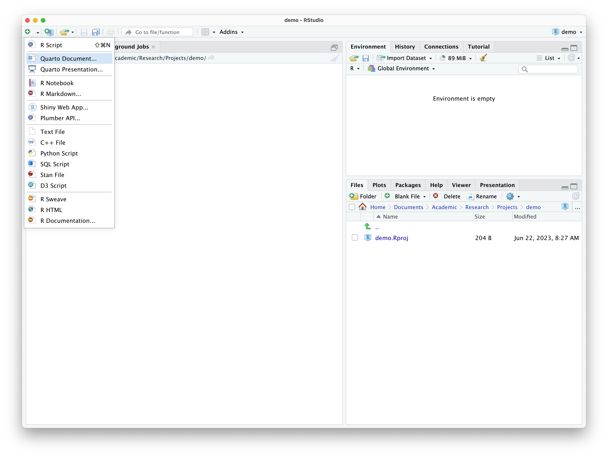
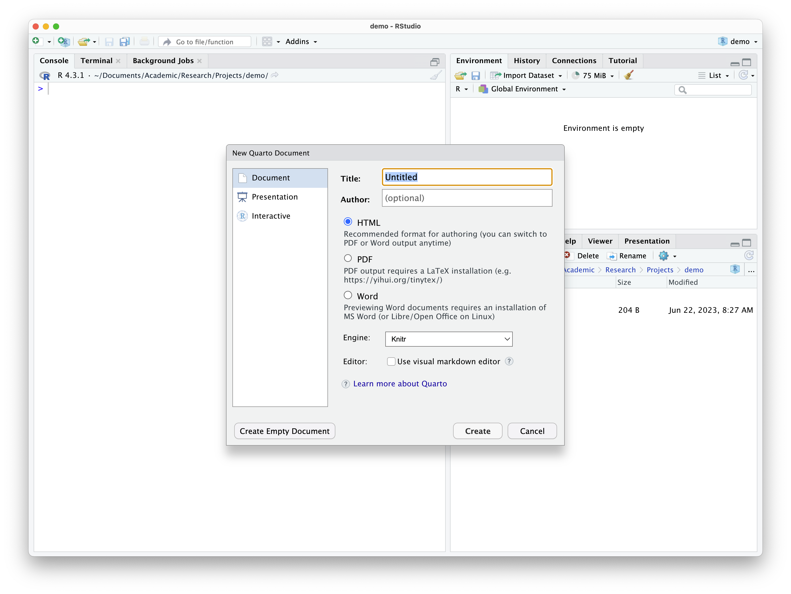
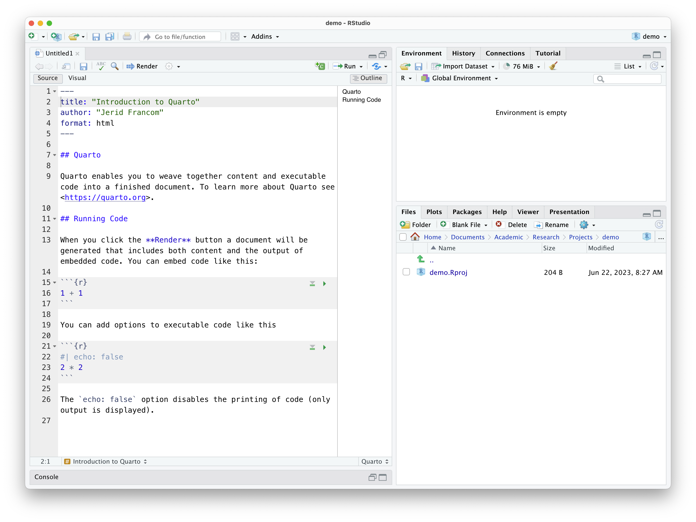
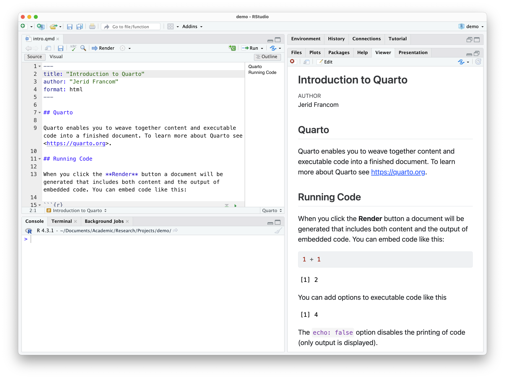

00. Literate Programming
An introduction to Quarto
preface
In this recipe, we will introduce the concept of Literate Programming and describe how to implement this concept through Quarto. I will provide a demonstration of some of the features of Quarto and describe the main structural characteristics of a Quarto document to help you get off and running writing your own documents that combine code and prose.
Concepts and strategies
Literate Programming
First introduced by Donald Knuth (1984), the aim of Literate Programming is to be able to combine computer code and text prose in one document. This allows an analyst to run code, view the output of the code, view the code itself, and provide prose description all in one document. In this way, a literate programming document allows for presenting your analysis in a way that performs the computing steps desired and presents it in an easily readable format. Literate programming is now a key component of creating and sharing reproducible research (Gandrud 2015).
Quarto
Quarto is a specific implementation of the literate programming paradigm. In Figure 1 we see an example of Quarto in action. On the left we see the Quarto source code, which is a combination of text and code. On the right we see the output of the Quarto source code as an HTML document.
Quarto documents generate various types of output: web documents (HTML), PDFs, Word documents, and many other types of output formats all based on the same source code. While the interleaving of code and prose to create a variety of output documents is one of the most attractive aspects of literate programming and Quarto, it is also possible to create documents with no code at all. It is a very versatile technology as you will come to appreciate.
A Quarto source document is a plain-text file with the extension .qmd that can be opened in any plain text reader. We will be using the RStudio IDE (henceforth RStudio) to create, open, and edit, and generate output from .qmd files but any plain-text reader, such as TextEdit (MacOS) or Notepad (PC) can open these files.
With this in mind, let’s now move on to the anatomy of a Quarto document.
Anatomy of a Quarto Document
At the most basic level a Quarto document contains two components:
- a front-matter section and
- a prose section.
A third component, a code block, can be interleaved within the prose section to add code to the document. Let’s look at each of these in turn.
Front-matter
The front matter of a Quarto document appears, well, at the front of the document (or the top, rather). Referring back to Figure Figure 1, we see the front matter at the top.
---
title: "Introduction to Quarto"
author: "Jerid Francom"
format: html
---When creating a Quarto document with RStudio the default attribute keys are title, author, and format. The front matter is fenced by three dashes ---.
The values for the first two keys are pretty straightforward and can be edited as needed. The value for the format attribute can also be edited to tell the .qmd file to generate other output types. Can you guess what value we might use to generate a PDF document? Yep, it’s just pdf. As we work Quarto you will learn more about how to use the RStudio interface to change some of these key-value pairs and add others!
Prose
Anywhere below the front matter and not contained within a code block (see below) is open for prose. The prose section(s) have an added functionality in that they are Markdown aware. What does that mean, you say? Well, Markdown refers to a set of plain-text formatting conventions to produce formatted text in the output document. To quote Wikipedia:
Markdown is a lightweight markup language for creating formatted text using a plain-text editor. John Gruber and Aaron Swartz created Markdown in 2004 as a markup language that is appealing to human readers in its source code form. Markdown is widely used in blogging, instant messaging, online forums, collaborative software, documentation pages, and readme files.
What this enables us to do is to add simple text conventions to signal how the output should be formatted. Say we want to make some text bold. We just add ** around the text we want to appear bold.
**bold text**We can also do:
- italics
*italics* - links
[links](http://wfu.edu) strikethrough~~strikethrough~~- etc.
Follow this link find more information on basic Markdown syntax.
Code blocks
Code blocks are where the R magic happens. Again, referring to Figure 1, we see that there is the following code block.
```{r}
1 + 1
```A code block is bound by three backticks ```. After the first backticks the curly brackets {} allow us to tell Quarto which programming language to use to evaluate (i.e. run) in the code block. In most cases this will be R, hence the the opening curly bracket `{r}`. But there are other languages that can be used in Quarto, such as Python, SQL, and Bash.
In the previous example, R is used as a simple calculator adding 1 + 1. Here’s what this code block produces.
1 + 1[1] 2```{r}
#| label: add
1 + 1
```We have only mentioned selecting the coding language and labeling the code block, but code blocks have various other options that can be used to determine how the code block should be used. Some common code block options are:
- hiding the code:
#| echo: false
```{r}
#| label: add
#| echo: false
1 + 1
```[1] 2- hiding the output
#| include: false
```{r}
#| label: add
#| include: false
1 + 1
```- etc.
Create and render a Quarto document
The easiest and most efficient way to create a Quarto source file is to use the RStudio point-and-click interface. Just use the toolbar to create a new file and select “Quarto Document…”, as seen in Figure 2.

This will provide you a dialogue box asking you to add a title and author to the document and also allows you to select the type of document format to output, as seen in Figure 3.

Enter a title and author and leave the format set to HTML.
On clicking ‘Create’ you will get a Quarto document, as in Figure 4, with some default/ boilerplate prose and code blocks. The prose and code blocks can be deleted, and we can start our own document.

But for now, let’s leave things as they are and see how to generate the output report from this document. Click “Render” in the RStudio toolbar. Before it will render, you will be asked to save the file and give it a name.
Once you have done that the .qmd file will render in the format you have specified and open in the ‘Viewer’ pane, as seen in Figure 5.

Check your understanding
- Literate Programming, first introduced by Donald Knuth in 1984, allows the combination of computer code and text prose in one document.
- The programming paradigm Literate Programming is implemented through , a platform that facilitates the creation of a variety of output documents based on the same source code.
- Which of the following components does a basic Quarto document not contain?
- To generate a PDF document in Quarto, you can edit the format attribute value in the front-matter section to .
- The code block options
echoandincludecan be used to hide the code and output, respectively. - In Quarto, a code block, where the programming language code is entered, is bounded by three underscores (
_).
Lab preparation
This concludes our introduction to literate programming using Quarto. We have covered the basics there but there is much more to explore.
In preparation for Lab 0, ensure that you have completed the following:
- Setup your computing environment with R and RStudio
- Installed the necessary packages:
quartotinytex
and that you are prepared to do the following:
- Open RStudio and understand the basic interface
- Create, edit, and render Quarto documents
- Use some basic Markdown syntax to format text
With this in mind, you are ready to move on to Lab 00.
References
Çetinkaya-Rundel, Mine. 2023. “Get Started with Quarto.” YouTube. https://www.youtube.com/watch?v=_f3latmOhew.
Gandrud, Christopher. 2015. Reproducible Research with R and R Studio. Second edition. CRC Press.
Knuth, Donald Ervin. 1984. “Literate Programming.” The Computer Journal 27 (2): 97–111.